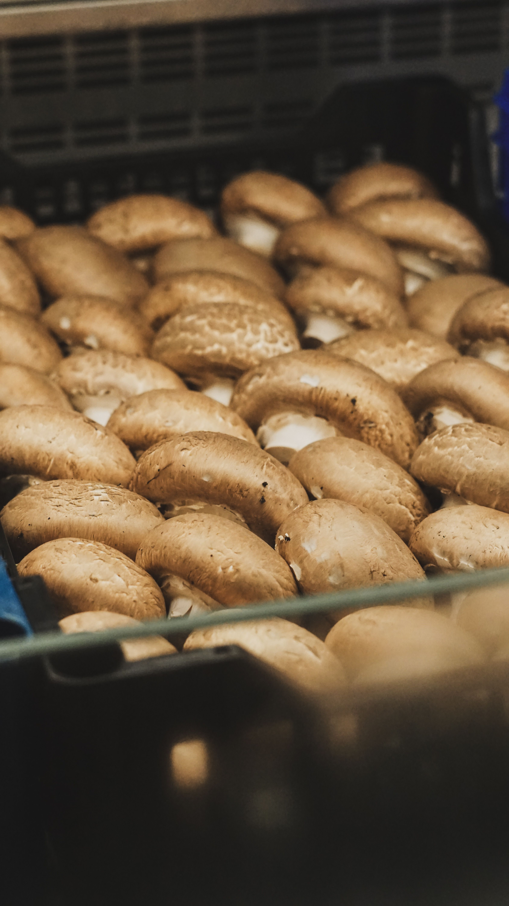

Des producteurs valorisés
Nous mettons leur travail et leur savoir-faire au premier plan.

Notre histoire
AgriMarket rapproche les familles des producteurs qui cultivent avec passion. Nous rendons les produits frais plus faciles à découvrir, à choisir et à commander.
Pourquoi AgriMarket
Notre application crée un lien direct entre les agriculteurs locaux et leurs clients. Chaque produit raconte un savoir-faire, une saison et un territoire.
Nous mettons leur travail et leur savoir-faire au premier plan.
Des récoltes choisies avec soin pour garder le goût du naturel.
Des échanges simples et transparents entre producteurs et clients.